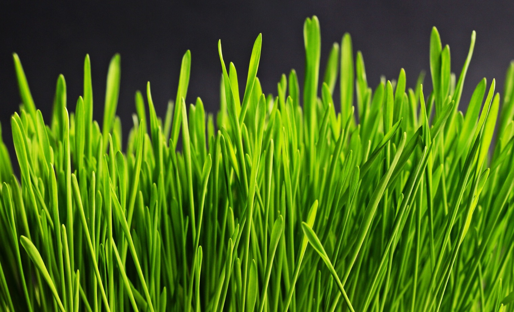

<ion-view>
	<ion-content id="community">

        <div class="img">
            
        </div> 

        <div class="community-container">
            <div class="main-community-line" ng-click="compete()">
                 Compete with Friends
                <p class="alt">Find your friends and compete to see who can meet their daily goal</p>
            </div>
        </div>

        <div class="community-container">
            <div class="main-community-line" ng-click="compare()">
                 Neighbor Comparison
                <p class="alt">Compare your energy use to users in similar homes</p>
            </div>
        </div>

        <!-- stub for when there's a built in forum feature
        <div class="community-container">
            <div class="main-community-line" ng-click="forum()"> Forum </div>  
        </div> -->
        <div class="community-container">
            <div class="main-community-line">
                <a href="https://www.facebook.com/EnerTalk" target="_blank">
                     Forum
                    <p class="alt">Discuss your energy adventure on our Facebook page</p>
                </a>
            </div>
        </div>
         
        <div class="community-container">
            <div class="main-community-line" ng-click="donate()">
                Donate to Charity
                <p class="alt">Saved some energy? Give back by donating to charity</p>
            </div>
        </div>

        <div class="community-container">
            <div class="main-community-line" ng-click="homeDR()">
                Demand Response
                <p class="alt">Save the environment by reducing usage at peak times</p>
            </div>
        </div>
    </ion-content>
</ion-view>
